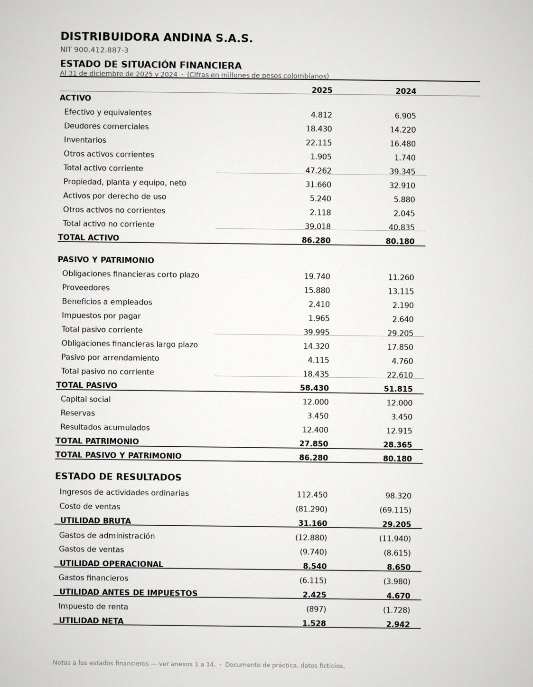
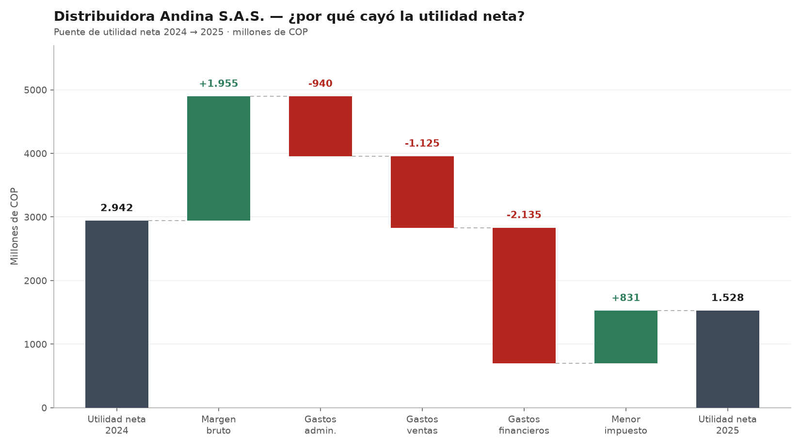
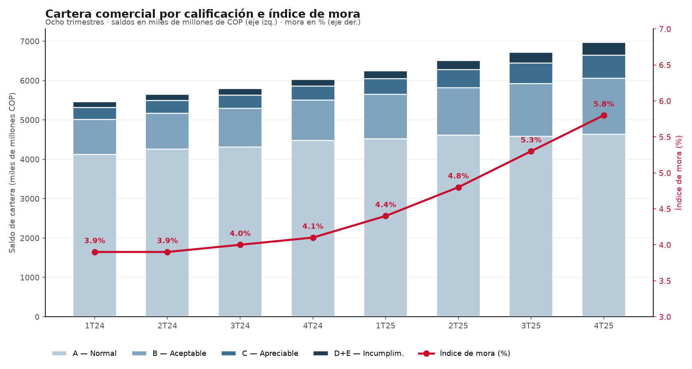
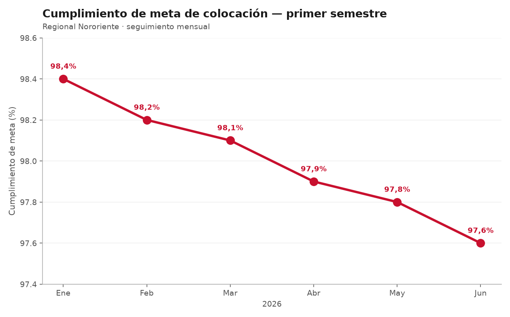

Módulo 5 · Sesión 2 de 2
Narrativas visuales con IA
Ver, interpretar y contar historias con imágenes.
La sesión pasada íbamos en una dirección
Vimos cómo los modelos de difusión generan imágenes a partir de texto, y el vocabulario para controlarlas: encuadre, luz, lente, estética.
El giro de hoy
Los mismos modelos pueden hacer el camino inverso: ver e interpretar imágenes. Y ahí es donde esto se vuelve útil para el trabajo diario.
Antes
Texto → Imagen
Crear algo que no existía.
Ahora
Imagen → Texto
Leer, extraer, interpretar y explicar lo que ya tienen sobre el escritorio.
La IA
que ve
Modelos multimodales aplicados a documentos, estados financieros y gráficos.
Seis cosas que puede hacer con una imagen
Todo esto lo hacen desde Gemini corporativo, adjuntando la imagen directamente en la conversación.
Un buen prompt de análisis visual tiene cuatro partes
«Eres analista de crédito revisando los estados financieros de un cliente empresarial.»
«Identifica las variaciones relevantes entre 2024 y 2025.»
«Preséntalo en una tabla: concepto, 2025, 2024, variación.»
«Primero el panorama, luego cada rubro.»
La diferencia entre una respuesta inútil y una que sirve casi nunca está en el modelo. Está en cuánto contexto le dieron.
Un estado financiero escaneado

Distribuidora Andina S.A.S. — empresa ficticia, datos de práctica.
Eres analista de crédito. Adjunto el estado financiero escaneado de un cliente. Extrae toda la información a una tabla con concepto, 2025 y 2024. Respeta subtotales y totales. No calcules nada que no esté en el documento.
Lo que hay que mirar
¿Leyó bien todos los dígitos? Los separadores de miles y los paréntesis de cifras negativas son donde más se equivoca.
Este documento tiene una historia adentro. La vamos a encontrar en la siguiente demostración.
Interpretar un gráfico que no le explicaron

Ventas +14 %, pero utilidad neta −48 %.

Doble eje y cuatro series apiladas: difícil de leer de un vistazo.
Adjunto un gráfico. Explícame qué muestra, cuál es la tendencia principal y cuál es la conclusión. Escribe para alguien que no es financiero.
Lo que la IA no hace bien
Regla de oro
La IA asiste; usted verifica y decide. Ninguna cifra que vaya a un comité sale de aquí sin haberse confirmado contra la fuente.

Pídanle a Gemini que lo interprete… y después miren el eje vertical.
De ver
a contar
Un hallazgo que nadie entiende es un hallazgo que no existe.
Narrativa visual no es «ponerle imágenes»
Una narrativa visual es una secuencia de imágenes que sostiene un argumento. Cada una prepara, revela, contrasta o concluye.
No es decoración: es la forma de que un hallazgo se entienda en treinta segundos.
Si elimino esta imagen, ¿se pierde parte del argumento? Si la respuesta es sí, es narrativa. Si es no, es decoración.
Piensen en los «antes y después», en los informes de seguimiento, en la lámina que abre un comité. Todos son narrativas visuales.
Tres momentos que sirven para casi todo
Establecer
¿Cuál es el punto de partida? ¿Qué necesita saber quien lee antes que nada?
Desarrollar
¿Cuál es el corazón del asunto? ¿Qué se encontró, qué cambió?
Resolver
¿Hacia dónde vamos? ¿Qué se concluye, qué se propone?
Análisis de crédito: lo que el cliente presenta → lo que encontramos → lo que recomendamos. · Seguimiento de cartera: la meta → el comportamiento real → el plan de acción.
Distribuidora Andina, en tres momentos
Un cliente que crece
Las ventas suben 14 % y la operación sigue sana: el margen bruto mejora.
El costo de ese crecimiento
La utilidad neta cae 48 %. La deuda de corto plazo sube 75 % y el gasto financiero se come la operación.
Qué recomendamos
Cobertura de intereses en 1,40x: muy ajustada. Aprobar condicionado a reperfilar la deuda.
El mismo documento del que partimos en el Bloque 1. Leerlo era la mitad del trabajo; contarlo es la otra mitad.
Que Gemini le arme la estructura
Soy analista de crédito. Encontré que un cliente aumentó sus ventas 14 % pero su utilidad neta cayó 48 %, financiándose con deuda de corto plazo que creció 75 %. Necesito construir una narrativa visual de tres momentos para presentarla en comité.
Momento 1, ESTABLECER: ¿qué contexto necesita el comité? · Momento 2, DESARROLLAR: ¿cuál es el hallazgo central? · Momento 3, RESOLVER: ¿cuál es la recomendación?
Para cada momento dame un título corto, una descripción de lo que la imagen debería comunicar, y el tono sugerido.
Empiecen siempre por el mensaje, nunca por la imagen. La imagen es la consecuencia del argumento, no al revés.
Un estilo base para que las tres se vean familia
Si cada imagen tiene un estilo distinto, la secuencia se rompe y deja de leerse como un argumento.
Definan un estilo y una paleta, y repítanlos textualmente en los tres prompts.
¿Por qué en inglés?
Los modelos se entrenaron sobre todo con descripciones en inglés. Pídanle a Gemini que traduzca y enriquezca sus prompts: piensan en español, generan en inglés.
Estilo: professional flat design digital illustration
Paleta: deep institutional navy (#1B3A5C) with warm gold accents (#C9A84C), white background
Composición: clean, modern, centered subject, minimal elements
Después: «Genera tres prompts de imagen en inglés, uno por momento, todos con este estilo base.»
Taller — su propia narrativa de tres momentos
10 min
10 min
15 min
10 min
Datos ficticios únicamente. Trabajen con el caso que les entregamos o con un ejemplo inventado. Nada de información real de clientes.
La IA lee.
Usted decide qué significa.
Se llevan dos capacidades que se complementan: leer documentos y gráficos que antes tocaba transcribir a mano, y convertir un hallazgo en algo que un comité entiende de inmediato. La verificación y el criterio siguen siendo suyos.